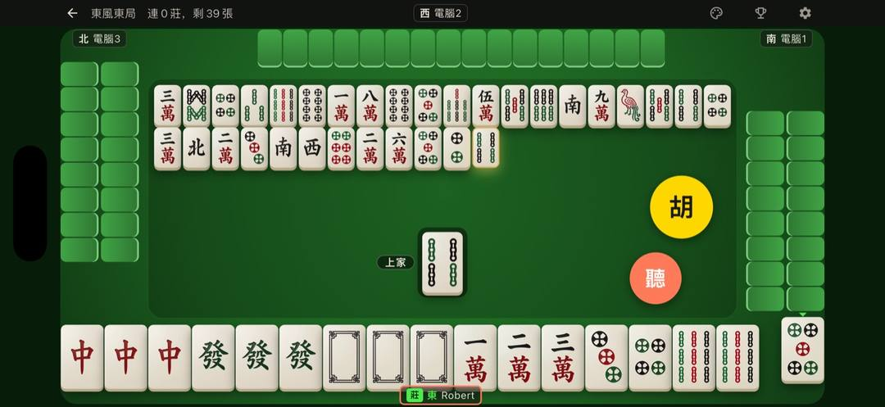
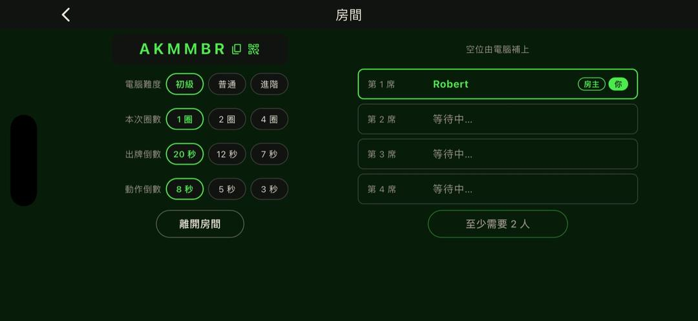

單機麻將 App 推薦：不用網路、不用帳號、不賭博的台灣16張（2026）
本頁由《台灣麻將 Now》開發者撰寫，比較資料取自 2026-10-25 的 App Store 頁面。
想在 iPhone 上不用網路打台灣16張，可以選能完全離線、對電腦 AI 的單機 App。如果也不想要帳號、金幣儲值和每日簽到，就看商店頁有沒有寫「不用註冊」、「無內購」，以及年齡分級裡有沒有「模擬賭博」。下表整理 6 款 App 在 2026 年 10 月 25 日 App Store 頁面上的寫法。本頁由《台灣麻將 Now》開發者撰寫。
依需求快速挑選
不排名。每條只對一種需求。
-
完全不想要廣告
兩款的商店頁都寫沒有廣告
-
想從頭學規則
商店頁有教學和 AI 教練，Pro 要內購
-
只跟家人朋友打，不配陌生人
用桌號或 QR 開私人牌桌，AI 補位
-
想要連線內容多
連線玩法多，有 i 幣儲值和每日登入，18+
-
不想被金幣、儲值、簽到綁住
前者目前沒有內購和簽到；後者商店頁寫無內購
免費、含廣告：為了不打斷牌局，只有在每圈最後一次換莊前有 30 秒插播廣告，每次結算畫面有小的橫幅廣告。
6 款台灣16張單機麻將 App 比較表（2026-10-25 查核）
同一份表。寬螢幕是表格，手機是卡片，欄位分兩組切換。自家放最後，不加底色。
| App（開發者） | 價格 | 需要帳號 | 金幣／儲值／內購 | 每日簽到／補幣 | 廣告 | 年齡分級 | 離線可玩 | 台灣16張規則 | 和朋友開桌 | 保存牌局 |
|---|---|---|---|---|---|---|---|---|---|---|
| 麻雞學院 - 台灣16張麻將Boska Studio | 免費＋內購（Pro NT$150） | 不用註冊 | 無金幣；有 Pro 與訂閱 | 商店頁未提及 | 分級欄未列「含廣告」 | 4+ | 商店頁未明寫 | 是；Pro 可自訂台數 | 房號、連結或附近連線 | 線上房斷線回原位 |
| 麻將明星3缺1IGS | 免費＋內購（NT$33 起） | 免註冊，自動會員 | i 幣、儲值與轉蛋 | 有每日登入 | 含廣告 | 18+（頻繁模擬賭博） | 商店頁未提及 | 商店頁未細述 | 好友廳；主打萬人配桌 | 商店頁未提及 |
| 其樂麻將 - 台灣16張PerKind | 免費 | 不需註冊或登入 | 無內購；局內有籌碼 | 每日換對手、週榜 | 商店頁寫無廣告 | 18+（頻繁模擬賭博） | 是，單機可離線 | 是 | 未寫可與朋友同桌 | 商店頁未提及 |
| 麻將16張JUNG CHIANG TUNG | 付費 NT$30 | 商店頁未提及 | 無內購 | 商店頁未提及 | 商店頁寫沒有廣告 | 9+ | 是，打開就能打 | 是，局數可選 | 無，單人對電腦 | 商店頁未提及 |
| 愛台灣打麻將AVECTOR | 免費＋內購（金幣等） | 連線用一鍵帳號 | 金幣、點數、商城道具 | 有每日補點 | 含廣告，可買無廣告 | 18+（頻繁模擬賭博） | 單機可離線 | 是 | 真人連線，未寫私人房 | 商店頁未提及 |
| 台灣麻將 Now（本站）MyOpen Studio | 免費 | 不需要 | 目前沒有（2026-10） | 目前沒有（2026-10） | 有，換莊前與結算橫幅 | 13+ | 是，飛航模式可打 | 是，有東風圈／半莊／全莊 | 桌號或 QR，AI 補位 | 關閉後可從原局繼續 |
以上資料取自各 App 在台灣 App Store 的頁面（2026 年 10 月 25 日查核），價格為新台幣，功能與價格可能隨更新改變，請以 App Store 最新頁面為準。表格一格放不下的句子，寫在下面各 App 的說明裡，沒有改成另一種意思。
怎麼判斷一款麻將 App 乾不乾淨
商店頁沒寫的，表上就填「商店頁未提及」，不拿評論去補。官網多寫的句子，標成「官網寫」。
能不能完全離線
看有沒有寫飛航模式或單機離線。寫了的是台灣麻將 Now（飛航模式可打）、其樂麻將（連網才有排行榜）、麻將16張（打開就能打）、愛台灣打麻將（單機可離線）。麻雞學院商店頁沒明寫，官網寫單機與附近連線可離線。明星3缺1 沒提到。排行榜和連線通常仍要網路。
要不要帳號
不用註冊，不等於沒有會員。台灣麻將 Now、麻雞學院寫不用註冊，其樂麻將寫不需登入。明星3缺1 是自動會員，也能用 Facebook、Yahoo、LINE。愛台灣連線要帳號，可一鍵產生。麻將16張沒提到帳號。
有沒有金幣、儲值、訂閱
看 App 內購買。台灣麻將 Now 目前（2026 年 10 月）沒有內購或訂閱，是純台數；之後會隨群組功能加入。麻將16張與其樂麻將寫無內購，其樂的籌碼仍依台數輸贏。麻雞學院無金幣，有 Pro NT$150 和訂閱。明星3缺1 有 i 幣、儲值和轉蛋。愛台灣有金幣、點數和商城道具。
有沒有每日登入或補幣
明星3缺1 有每日登入，黃金會員每天領 i 幣。愛台灣寫每天補點、福利天天送。其樂有每日換對手和週排行，不是簽到領幣。台灣麻將 Now 目前（2026 年 10 月）沒有每日簽到或登入獎勵。麻雞學院和麻將16張沒提到。
年齡分級裡的「模擬賭博」是什麼意思
這是 Apple 的分級標示，不是本文的評語，也不代表能贏真錢。明星3缺1、其樂麻將、愛台灣是 18+，標了頻繁模擬賭博；明星3缺1 同時寫明不提供現金交易賭博。麻雞學院 4+，麻將16張 9+，台灣麻將 Now 13+。
各 App 重點
每款都寫適合誰、商店頁寫了什麼、要注意什麼。台灣麻將 Now 放最後。
麻雞學院 - 台灣16張麻將
在 App Store 看麻雞學院 · Boska Studio
適合想學規則，也想就近開打的人。商店頁有教學和 AI 教練，不用註冊，沒有金幣。Pro NT$150 買斷，另有月繳、年繳；Pro 才能自訂台數和局數。房號、連結或附近連線可開桌，電腦補空位，斷線回原位。商店頁沒明寫離線（官網寫單機與附近連線可離線），也沒寫簽到。分級欄未列「含廣告」。
麻將明星3缺1
在 App Store 看麻將明星3缺1 · IGS
適合要連線內容、也接受儲值和每日登入的人。主打萬人配桌，另有好友廳。免註冊即自動會員，可用 Facebook、Yahoo 或 LINE。有 i 幣、NT$33–330 儲值、黃金會員 NT$330／月和轉蛋，含廣告。18+（頻繁模擬賭博），同時寫明不提供現金交易賭博。沒細述台數、離線和存檔。官網台數是見花見字。
其樂麻將 - 台灣16張
在 App Store 看其樂麻將 · PerKind
適合想單機離線，而且商店頁寫沒有廣告的人。不需註冊或登入，單機可離線，連網才有排行榜，是台灣16張。籌碼依台數輸贏，商店頁寫無內購、無廣告。有每日換對手和每週排行榜。18+（頻繁模擬賭博）。沒寫可以跟朋友同桌，只寫邀請朋友衝地區排名，也沒寫存檔。
麻將16張
在 App Store 看麻將16張 · JUNG CHIANG TUNG · 付費 NT$30
適合願意一次付 NT$30、想打開就打、也不要廣告的人。商店頁寫不用連線，打開就能打，沒有內購，也沒有廣告。是台灣16張，局數可以選隨意、一圈或一將。這款是單人對電腦，沒有跟朋友開桌。商店頁沒有提到帳號和每日簽到，也沒有寫牌局能不能保存。年齡分級 9+。
愛台灣打麻將
在 App Store 看愛台灣打麻將 · AVECTOR
適合接受金幣和廣告，又想單機或真人連線的人。單機可離線；連線用帳號，可一鍵產生。有金幣 NT$60–2,990、點數、商城道具、30 天暢玩包和 30 日無廣告，並寫每天補點、福利天天送。是台灣16張，含廣告，18+（頻繁模擬賭博）。沒寫私人房，也沒寫存檔。
台灣麻將 Now（本站）：優點與要注意
在 App Store 看台灣麻將 Now · MyOpen Studio · 只支援 iPhone
麻雞學院有教學和 AI 教練，其樂麻將與麻將16張寫沒有廣告，明星3缺1 的連線內容多。台灣麻將 Now 適合想離線、不用帳號，目前也不想被儲值或簽到綁住的人。限制跟優點列在一起。
優點
- 單機完全離線，飛航模式也能打。
- 不用帳號。
- 目前（2026 年 10 月）沒有內購、訂閱、每日簽到或登入獎勵。
- 滑掉 App、強制關閉或來電中斷後，都能從原局繼續。
- 可以用桌號或 QR 開私人牌桌，人不夠由 AI 補位，不配陌生人。
- 有聽牌顯示。東風圈、半莊、全莊都有。
- 開發者表示，牌面在手機上比一般手遊麻將大。

要注意
- 有廣告：為了不打斷牌局，只有在每圈最後一次換莊前有 30 秒插播廣告，每次結算畫面有小的橫幅廣告。
- 只支援 iPhone，不支援 iPad。
- 評分數還很少。
- 沒有字體放大，也沒有長輩模式。
- 之後會隨群組功能加入內購和訂閱。上線時要更新這一段、比較表、常見問題和頁尾的下載說明。
請補一張台灣麻將 Now 的真實結算畫面，下方要看得到小橫幅廣告。這裡先留空，不上假圖。

常見問題
單機麻將 App 真的完全不用網路嗎？
要看商店頁有沒有寫明離線或飛航模式可打。台灣麻將 Now 寫單機完全離線；其樂麻將寫單機離線，連網才有排行榜；麻將16張寫不用連線；愛台灣打麻將寫單機可離線。排行榜和連線對戰通常仍要網路。麻雞學院的商店頁沒有明寫，官網才寫單機與附近連線可離線。
不用帳號的台灣麻將 App 有哪些？
依 2026 年 10 月 25 日的商店頁，台灣麻將 Now、麻雞學院寫不用註冊，其樂麻將寫不需註冊或登入。明星3缺1 是免註冊自動會員，也可用 Facebook、Yahoo 或 LINE。愛台灣連線要用帳號，可一鍵產生。麻將16張沒提到帳號。
「模擬賭博」分級是什麼？
這是 Apple 年齡分級的標示，代表遊戲內有模擬賭博內容，不代表能贏真錢，也不代表這款 App 違法。麻將明星3缺1、其樂麻將和愛台灣打麻將是 18+，並標了頻繁模擬賭博。明星3缺1 的商店頁同時寫明不提供現金交易賭博。
單機麻將打到一半關掉，牌局會不見嗎？
各款不一樣。台灣麻將 Now 的單機牌局可以暫停；滑掉 App、強制關閉或來電中斷後，也能從原局接著打。這是開發者在 2026 年 10 月 25 日確認的。其他 App 的商店頁大多沒有說明。麻雞學院寫的是線上房斷線可以回原位。
有適合長輩的單機麻將嗎？
可以先看會不會催著你出牌、有沒有儲值，以及牌面清不清楚。其樂麻將的商店頁寫大字體、慢節奏。台灣麻將 Now 沒有字體放大，也沒有長輩模式。倒數只在最後 5 秒提醒，胡牌按鈕特別大，並有聽牌顯示。開發者表示，牌面在手機上比一般手遊麻將大。
免費麻將 App 為什麼有廣告？
廣告和內購是很多免費 App 的收入來源。其樂麻將的商店頁寫無廣告，麻將16張也寫沒有廣告。台灣麻將 Now 有廣告：為了不打斷牌局，只有在每圈最後一次換莊前有 30 秒插播廣告，每次結算畫面有小的橫幅廣告。愛台灣打麻將含廣告，可買 30 日無廣告。
怎麼選：依你的需求
完全不要廣告，可考慮其樂麻將，或付費 NT$30 的麻將16張，商店頁都寫沒有廣告。想學規則，看麻雞學院。只跟家人朋友打，台灣麻將 Now 用桌號或 QR，不配陌生人。不想被金幣和簽到綁住，看台灣麻將 Now（2026 年 10 月沒有內購和簽到）或麻將16張。
免費、含廣告：為了不打斷牌局，只有在每圈最後一次換莊前有 30 秒插播廣告，每次結算畫面有小的橫幅廣告。
關於本頁
半百羅伯。【待補：一句作者經歷】
本頁由《台灣麻將 Now》開發者 MyOpen Studio 撰寫。盡量只寫商店頁上的事實，連結可核對。查核日 2026 年 10 月 25 日；官網句會標「官網寫」。續局、聽牌、目前沒有內購，是開發者當天確認的。2026-10-26 發布，至少每季重查。
相關文章
最後更新：2026-10-26（商店頁資料查核日：2026-10-25）